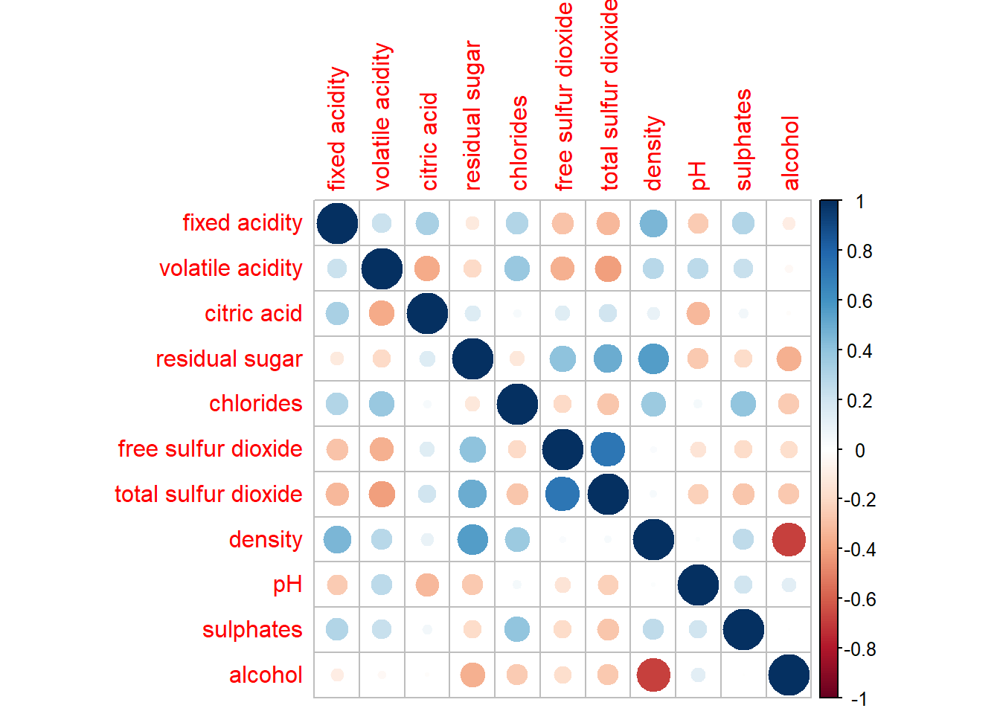

pacman::p_load( corrplot, ggstatsplot, tidyverse)Hands-on Exercise 5: Visual Multivariate Analysis
Install and launching R packages.
The code chunk below uses p_load() of pacman package to check if packages are installed in the computer. If they are, then they will be launched into R. The R packages installed are:
corrplot. A graphical display of a correlation matrix or general matrix. It also contains some algorithms to do matrix reordering. In addition, corrplot is good at details, including choosing color, text labels, color labels, layout, etc.
corrgram calculates correlation of variables and displays the results graphically. Included panel functions can display points, shading, ellipses, and correlation values with confidence intervals.
1. Visualising Correlation Matrices
1.1 Importing the data
wine <- read_csv("data/wine_quality.csv")
wine# A tibble: 6,497 × 13
fixed…¹ volat…² citri…³ resid…⁴ chlor…⁵ free …⁶ total…⁷ density pH sulph…⁸
<dbl> <dbl> <dbl> <dbl> <dbl> <dbl> <dbl> <dbl> <dbl> <dbl>
1 7.4 0.7 0 1.9 0.076 11 34 0.998 3.51 0.56
2 7.8 0.88 0 2.6 0.098 25 67 0.997 3.2 0.68
3 7.8 0.76 0.04 2.3 0.092 15 54 0.997 3.26 0.65
4 11.2 0.28 0.56 1.9 0.075 17 60 0.998 3.16 0.58
5 7.4 0.7 0 1.9 0.076 11 34 0.998 3.51 0.56
6 7.4 0.66 0 1.8 0.075 13 40 0.998 3.51 0.56
7 7.9 0.6 0.06 1.6 0.069 15 59 0.996 3.3 0.46
8 7.3 0.65 0 1.2 0.065 15 21 0.995 3.39 0.47
9 7.8 0.58 0.02 2 0.073 9 18 0.997 3.36 0.57
10 7.5 0.5 0.36 6.1 0.071 17 102 0.998 3.35 0.8
# … with 6,487 more rows, 3 more variables: alcohol <dbl>, quality <dbl>,
# type <chr>, and abbreviated variable names ¹`fixed acidity`,
# ²`volatile acidity`, ³`citric acid`, ⁴`residual sugar`, ⁵chlorides,
# ⁶`free sulfur dioxide`, ⁷`total sulfur dioxide`, ⁸sulphatesColumn 1 to 11 are all numerical and continuous variables, while the last two are categorical
1.2 Building with pairs() method
Syntax description of pairs function
Plotting the column 1 to 11. Note this can be adjusted to selected columns
pairs(wine[,1:11])
Sometimes we only want to show the upper or lower half of the correlation matrix as they are symmetric. Change the argument upper.panel = NULL to lower.panel = NULL to get the opposite impact.
pairs(wine[,2:12], upper.panel = NULL)
Showing the correlation coefficient of each pair of variables using panel.cor function
#|warning: false
panel.cor <- function(x, y, digits = 2, prefix = "", cex.cor, ...) {
usr <- par("usr")
on.exit(par(usr))
par(usr = c(0,1,0,1))
r <- abs(cor(x, y, use = "complete.obs"))
txt <- format(c(r, 0.123456789), digits = digits)[1]
txt <- paste(prefix, txt, sep="")
if(missing(cex.cor)) cex.cor <- 0.8/strwidth(txt)
text(0.5, 0.5, txt, cex = cex.cor * (1 + r)/2)
}
pairs(wine[,2:12], upper.panel = panel.cor)
1.3 Building with ggcormat() method
Visualising correlation matrix by using ggcorrmat() of ggstatsplot package provides a comprehensive and yet professional statistical report.
ggstatsplot::ggcorrmat(
data = wine,
cor.vars = 1:11,
ggcorrplot.args = list(outline.color = "black",
hc.order = TRUE,
tl.cex = 10),
title = "Correlogram for wine dataset",
subtitle = "Four pairs are no significant at p < 0.05"
)
ggcorrplot.args argument provide additional (mostly aesthetic) arguments that will be passed to ggcorrplot::ggcorrplot function. The list should avoid any of the following arguments since they are already internally being used: corr, method, p.mat, sig.level, ggtheme, colors, lab, pch, legend.title, digits.
The sample sub-code chunk can be used to control specific component of the plot such as the font size of the x-axis, y-axis, and the statistical report.
ggplot.component = list(
theme(text=element_text(size=5),
axis.text.x = element_text(size = 8),
axis.text.y = element_text(size = 8)))Building multiple plots is possible using grouped_ggcorrmat() of ggstatsplot.
grouped_ggcorrmat(
data = wine,
cor.vars = 1:11,
grouping.var = type, #to build facet plot
type = "robust",
p.adjust.method = "holm",
#provides list of additional arguments
plotgrid.args = list(ncol = 2),
ggcorrplot.args = list(outline.color = "black",
hc.order = TRUE,
tl.cex = 10),
#calling plot annotations arguments of patchwork
annotation.args = list(
tag_levels = "a",
title = "Correlogram for wine dataset",
subtitle = "The measures are: alcohol, sulphates, fixed acidity, citric acid, chlorides, residual sugar, density, free sulfur dioxide and volatile acidity",
caption = "Dataset: UCI Machine Learning Repository"
)
)
1.4 Building with corrplot package
Full documentations on corrplot package - An Introduction to corrplot Package
Before we can plot a corrgram using corrplot(), we need to compute the correlation matrix of wine data frame.
wine.cor <- cor(wine[, 1:11])Next, corrplot() is used to plot the corrgram by using all the default setting as shown in the code chunk below.
corrplot(wine.cor)
Further Customisation below.
Other layout design argument such as tl.pos, tl.cex, tl.offset, cl.pos, cl.cex and cl.offset
corrplot(wine.cor,
method = "ellipse",
type="lower",
diag = FALSE, #turn off diagonal cells
tl.col = "black") #change the axis text label color to black
We can design corrgram with mixed visual matrix of one half and numerical matrix on the other half. In order to create a coorgram with mixed layout, the corrplot.mixed(), a wrapped function for mixed visualisation style will be used.
corrplot.mixed(wine.cor,
lower = "ellipse",
upper = "number",
tl.pos = "lt", #placement of the axis label
diag = "l", #specify glyph on the principal diagonal
tl.col = "black")
Figure below shows a corrgram combined with the significant test. The corrgram reveals that not all correlation pairs are statistically significant. For example the correlation between total sulfur dioxide and free surfur dioxide is statistically significant at significant level of 0.1 but not the pair between total sulfur dioxide and citric acid.
With corrplot package, we can use the cor.mtest() to compute the p-values and confidence interval for each pair of variables.
wine.sig = cor.mtest(wine.cor, conf.level= .95)corrplot(wine.cor,
method = "number",
type = "lower",
diag = FALSE,
tl.col = "black",
tl.srt = 45,
p.mat = wine.sig$p, #input the calculated conf.level
sig.level = .05)
Matrix reorder is very important for mining the hiden structure and pattern in a corrgram. By default, the order of attributes of a corrgram is sorted according to the correlation matrix (i.e. “original”). The default setting can be over-write by using the order argument of corrplot(). Currently, corrplot package support four sorting methods, they are:
“AOE” is for the angular order of the eigenvectors. See Michael Friendly (2002) for details.
“FPC” for the first principal component order.
“hclust” for hierarchical clustering order, and “hclust.method” for the agglomeration method to be used.
- “hclust.method” should be one of “ward”, “single”, “complete”, “average”, “mcquitty”, “median” or “centroid”.
“alphabet” for alphabetical order.
#ordering using AOE
corrplot.mixed(wine.cor,
lower = "ellipse",
upper = "number",
tl.pos = "lt",
diag = "l",
order="AOE",
tl.col = "black")
#ordering using hierarchical clustering using ward
corrplot(wine.cor,
method = "ellipse",
tl.pos = "lt",
tl.col = "black",
order="hclust",
hclust.method = "ward.D",
addrect = 3)